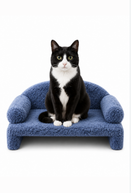
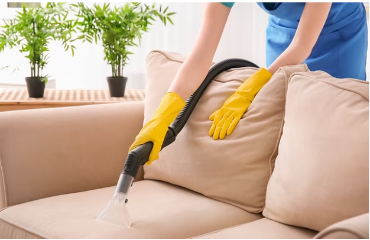
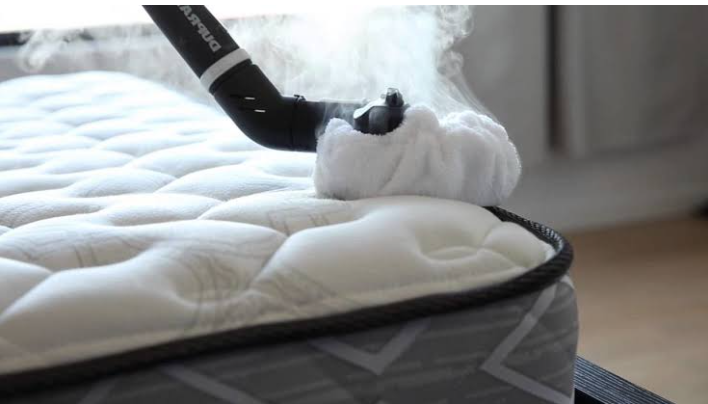
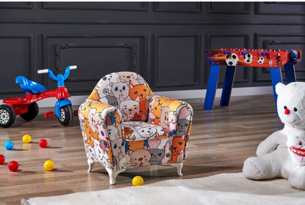
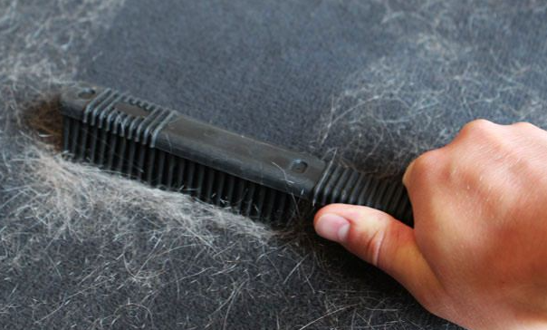

Blog

Koltuk Yıkama Sonrası Kuruma Süresi Ne Kadar?
Kumaş, nem, mevsim ve havalandırmanın kuruma süresine etkisi.

Koltuk Yıkama Ne Sıklıkla Yapılmalı?
Kullanım yoğunluğu ve kumaşın durumuna göre temizlik zamanını belirleme.

Yatak Temizliği Ne Zaman Yapılmalı?
Kullanım sıklığı ve yüzey izlerine göre bakım zamanını belirleme.

Çocuklu Evlerde Koltuk Temizliği
Çocuklu evlerde koltukların kullanımına bağlı oluşan kir ve lekeler hakkında.

Evcil Hayvanlı Evlerde Koltuk Temizliği
Tüy, günlük kullanım ve kumaş yüzeylerde oluşan kirler hakkında.
Araç Koltuğu Temizliği
Araç koltuklarında günlük kullanımdan kaynaklanan kir ve lekelerin temizliği.
Cam Temizliği
Ev ve iş yerlerindeki cam yüzeylerin temiz ve ferah görünmesi için temizlik.
 Çalışmalarımızı Instagram'da Gör
Çalışmalarımızı Instagram'da Gör